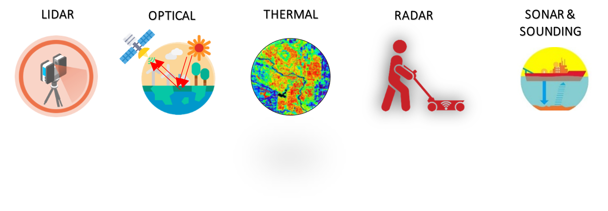

The Geospatial team from LTIMindtree has developed technology capabilities and skills in multiple areas and domains with various platforms and sensors (as shown in figure 1) according to the Client’s requirement. It has acquired, used, and developed multiple solutions and products using Geospatial technologies such as GNSS of standard make, Drone LiDAR, Backpack LiDAR, Echo Sounder for obtaining bed levels of water bodies, Total Station of 1-sec accuracy and Digital level Instrument and state of the art software technologies to solve industry specific problems.
A Differential Global Positioning System (DGPS) is an enhancement to the Global Positioning System (GPS) which provides improved location accuracy, in the range of operations of each system, from the 15-meter nominal GPS accuracy to about 1-3 cm in case of the best implementations. Each DGPS uses a network of fixed ground-based reference stations to broadcast the difference between the positions indicated by the GPS satellite system and known fixed positions. These stations broadcast the difference between the measured satellite pseudo ranges and actual (internally computed) pseudo ranges, and receiver stations may correct their pseudo ranges by the same amount. The digital correction signal is typically broadcast locally over ground-based transmitters of shorter range.
MORE ABOUT DGPS SURVEYINGDrones are powerful tools to help in the mapping and surveying industry. They can effectively perform work for 3D mapping, land surveys, photogrammetry, and topographic surveying by flying above the ground. Whether you are looking to add another tool to your services or want to learn more about the world of drones, here is everything that you need to know about drone surveying.
MORE ABOUT DRONE SURVEYINGLiDAR which stands for ‘Light Detection And Ranging’ is a remote sensing & surveying technology that measures distance by illuminating a target with a pulsed laser light. These light pulses combined with other data recorded by suitable Mapping systems generate precise, three-dimensional information about the shape of the Earth and its surface characteristics. LiDAR mapping, sometimes referred to as ‘3D laser scanning’ is popularly used as a technology to make high-resolution maps, with applications in geodesy/ geomatics, with terrestrial, airborne & mobile mapping methods
MORE ABOUT LIDAR SURVEYINGA bathymetric survey, sometimes referred to as a fathometric survey, is a type of hydrographic (water-based) survey that maps the depths and shapes of underwater terrain to illustrate the land that lies below
MORE ABOUT BATHYMETRY SURVEYING